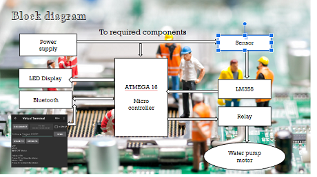
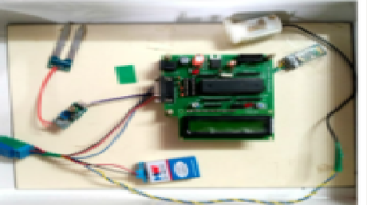
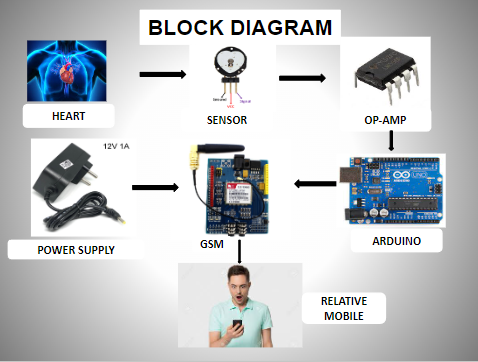

PROJECTS:
Agriculture is the need of most people's livelihood and is one of the main sources of the Indian economy. By using traditional methods, farmers are struggling hard in the agriculture field, mainly in the task of irrigation and it is quite difficult for the farmers due to lack of regularity in their work and negligence..Primitive irrigation system causes many drawbacks as it falls to conserve water and human energy so we are introducing automatic irrigation system by using IOT. By using the Internet of things and sensor technology we can use waste water in the field very effectively. Hence it can improve the utilization of water and it can increase productivity.. This project uses an ATMEGA series microcontroller which is programmed to receive the input signal of varying moisture conditions of the sensing environment. This is achieved by using an op-amp as a comparator which acts as an interface between the sensing arrangement and the microcontroller. Once the controller receives this signal, it generates an output that drives a relay for operating the water pump. Here we use Bluetooth for short distance communication to transfer all the information to the mobile phone. In real life, we will use IOT instead of Bluetooth for long-distance communication. An LCD display is also interfaced with the microcontroller to display the soil and water pump status. The sensing arrangement is made of two stiff metallic rods inserted into the field at a distance or sensor…
 This heartbeat monitoring system using GSM technology is used for periodic monitoring of patients who are suffering from heart disease. a pulse oximeter is interfaced with a GSM modem to send the heartrate to the user interfaced with the systems.The Tx and Rx pins of the Arduino board are connected to the Rx and Tx pins of the GSM modem respectively. When the patient puts his finger on the heart heartbeat sensor the sensor counts the heartbeat according to the pumping of the heart and generates output in the form of pulses. This count is given to Arduino pin no. The heart beat is sensed by heart beat sensor and given to the Arduino through op-amp.Loaded with the corresponding program and interface with the GSM.SIM is inserted to the GSM and 12v 1A power supply is given to the GSM .Call or message received by a relative mobile.
This project is designed to detect the username and password of the user and grant them access to their respective accounts. If their username is not found, it prompts them to sign up, verifies their details, and allows them to create a new account. The procedure for signing up is the same as the login process